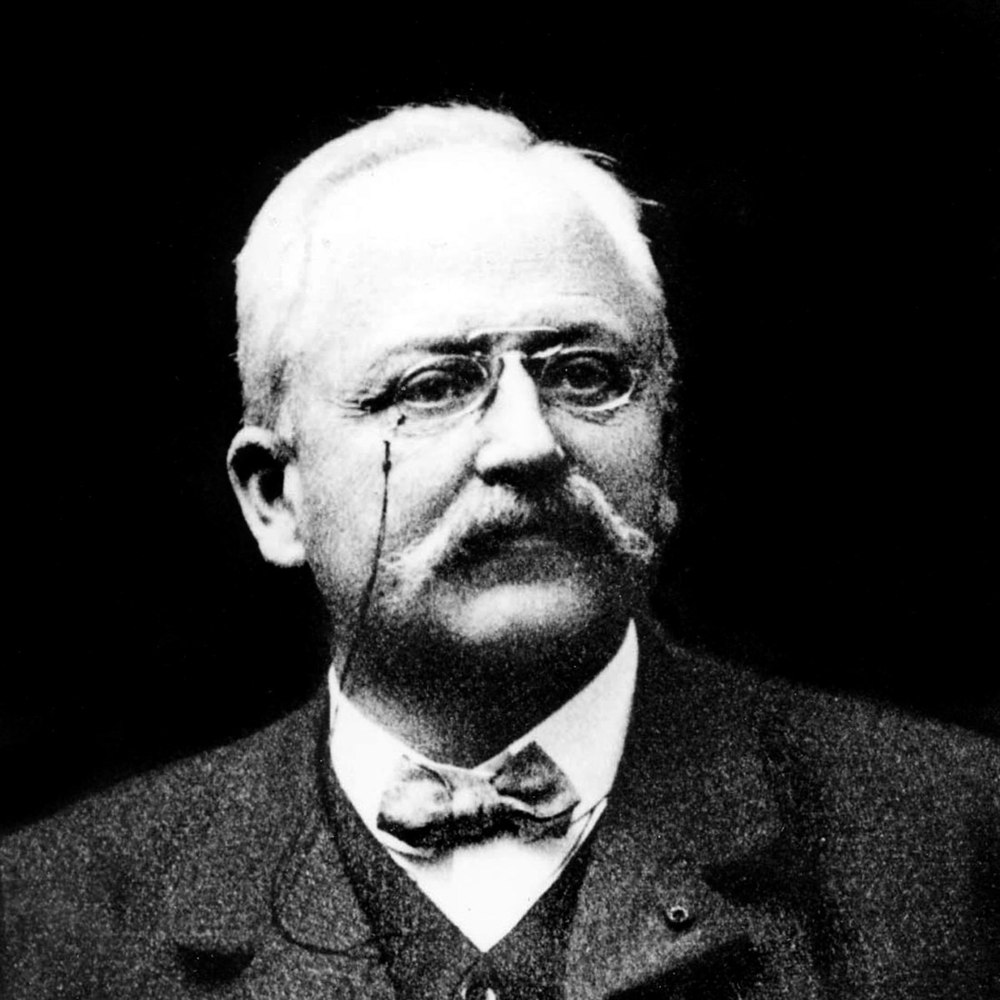

Hijo de uno de los mejores herreros franceses, Armand Peugeot (26 de marzo de 1849 / 2 de enero de 1915) utilizo sus amplios conocimientos técnicos en la fabricación de varillas de acero, para reemplazar barbas de ballena por faldas de crinolina de bicicletas. El nació en Hérimoncourt (Montbéliard), al este de Francia. Los padres son: Émile Peugeot (1815-1874) y Wilhelmine Ehrmann (1818-1893). Peugeot, Armand. En 1872 se casó con Sophie Leonie Fallot (1852-1930) y tuvieron cinco hijos, pero su único hijo varón, Raymond, murió en 1896. Armand Peugeot murió el 2 de enero de 1915 en Neuilly-sur-Seine (París). En 1881, Armand asistió a un curso de formación en una empresa de Leeds, y en 1895 se graduó en el École Centrale, una escuela de ingenieros de París.
En 1865, Armand y su primo Eugène se involucraron en la gestión de la empresa, entonces llamada Peugeot Frères Aînés. Incluyeron en 1882 la fabricación de bicicletas y exhibieron un triciclo impulsado por vapor en la Exposición Universal de París (1889). En 1892 el nombre de la empresa era Les Fils de Peugeot Frères. El 2 de abril de 1896, Armand creó su propia compañía llamada Société Anonyme des Automobiles Peugeot. Construyó una fábrica en Audincourt (Montbéliard), dedicada a la fabricación de automóviles con un motor de combustión interna. En 1889, la compañía Peugeot fabricó un automóvil de vapor diseñado por Serpollet, pero después, fabricó automóviles de estructuras tubulares con motor Daimler. En febrero de 1910, al no tener ningún heredero varón, acordó fusionar la empresa con la de Eugène. Cuando dejó la dirección de la empresa en 1913, Peugeot era el mayor fabricante de automóviles de Francia, con una producción de 10.000 coches al año.